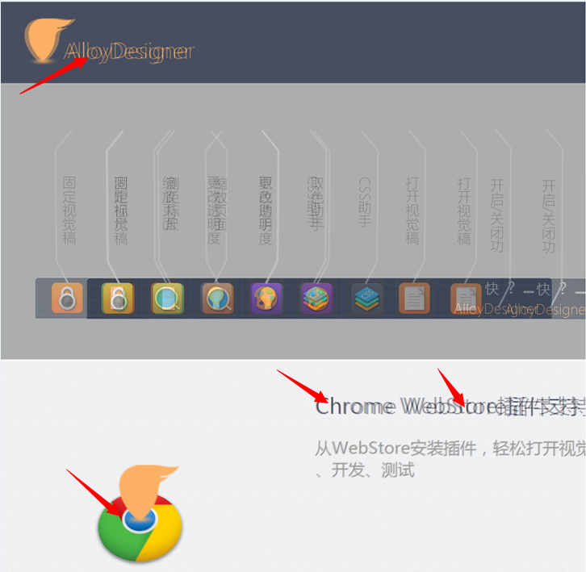

AlloyDesigner使用参考
怎么引入AlloyDesigner?
Chrome扩展插件的方式使用AlloyDesigner(Chrome)
1.点击此处 在Chrome Web Store上安装AlloyDesigner扩展插件
2.点击免费，然后添加，就会添加到Chrome的地址栏的右边
3.打开需要开发或者测试的页面，然后点击AlloyDesigner的图标，会在页面下出现AlloyDesigner的工具条，然后打开右边的加载视觉稿按钮，选择要加载的视觉稿
至此视觉稿就被加载进来了，重新刷新页面也不会丢失视觉稿
手动嵌入代码的方式使用AlloyDesigner(IE7 +)
1.在官网上下载最新的AlloyDesigner代码版alloydesigner.js
2.在要测试或者开发项目的页面中底部把AlloyDesigner引进来
<script type="text/javascript" src="alloydesigner.js"></script>3.将视觉文件保存成home.jpg或者home.png，放在与页面所在同目录下 或者视觉稿为其它文件，手动设置视觉文件路径
<script type="text/javascript">
$AD.set("design/design.jpg");
</script>
4.刷新页面，即可以看到视觉文件被引入进来了
怎么使用AlloyDesigner?
用于调整页面与测试
1.使用鼠标移动视觉稿，使视觉稿和页面近似重合

2.使用方向键微调视觉稿，使视觉稿和页面的参考点完全重合，没有重影
3.这时候页面不规范的部分就会有重影。
4.点击固定按键或按Alt+F键，固定视觉稿
固定后仍然可以使用Ctrl + 方向键微调视觉视觉稿的位置
5.在需要调整的地方，点击右键审查元素，审查元素
6.对样式进行调整，直到重合
7.记录样式修改。将修改的样式手动写在文件中，或者使用Chrome的Workspace功能自动更改。(查看怎么配置Workspace)
 或
或
直接用于开发页面(For Chrome)
AlloyDesigner可以直接用于开发页面，这种开发更加便捷与直接，较传统的开发模式，真正具有即见即所得的能力。
此时Chrome F12工具充当编辑器，AlloyDesigner提供制作蓝本与其他辅助工具支持。
1.配置Workspace功能，自动保存F12中的修改。这样，浏览器就充当了部分编辑器的功能
2.加载视觉稿，将视觉稿固定在页面最上面合适的位置
3.点击固定按键固定（Alt + F)，视觉稿做为页面的背景，然后可以适当调整透明度（使用Alt + 上/下键）
4.使用测试工具对页面进行测绘，然后将样式通过F12写入文件中去
5.使用取色工具，取视觉稿颜色
6.完成开发
测试工具的使用
测试工具可以测量每个div的像素宽高、距离等
使用快捷键Alt + D进行测量模式
不透明度调节工具的使用
不透明度调节主要调节视觉稿与body的不透明度，达到一个合适的不透明度，更易于开发
在视觉稿固定前，视觉图片处于body之上，这时调节的是视觉图片的不透明度，固定之后，文档处于视觉图片之上，这时调节的是body的不透明度。
取色工具
取色工具用于取视觉图片上的颜色
点击取色工具(Alt + X)按钮进入取色模式, 在视觉稿要取色的位置上点击进行取色，然后在右下角面板中的颜色值复制即可
CSS助手
css助手用于快速查看应用于元素上的样式
点击css助手按钮(Alt + C)进入CSS助手模式，鼠标在元素上停留即可看到应用于元素上的样式规则

配置Chrome Workspace功能
Chrome Workspace功能是将在Chrome开发者工具（F12）中对文档的修改直接应用于对应文件中。
由于Chrome并不知道当然文档对应用的文件为哪个，所以需要配置Workspace的映射关系来告诉Chrome对哪个文件做修改
使用Workspace条件：
- Chrome V31+(正式版)
- 本地服务器开发
1.点击F12工具的设置按钮
 2.点击左侧的workspace
3.点击Add folder
4.选择服务器所在的根目录，之后确定会chrome会在上面做出一个提示，点击允许
5.双击下图所示的地方，配置映射关系
6.填写映射关系，视具体情况填写，注意右边的/一定要填写（关键性步骤）
然后点击空白处，完成填写
2.点击左侧的workspace
3.点击Add folder
4.选择服务器所在的根目录，之后确定会chrome会在上面做出一个提示，点击允许
5.双击下图所示的地方，配置映射关系
6.填写映射关系，视具体情况填写，注意右边的/一定要填写（关键性步骤）
然后点击空白处，完成填写
7.然后回到一个页面中去，试着去更改一个样式数值，验证是否生效
注意Workspace只对外部引入的CSS样式有效！